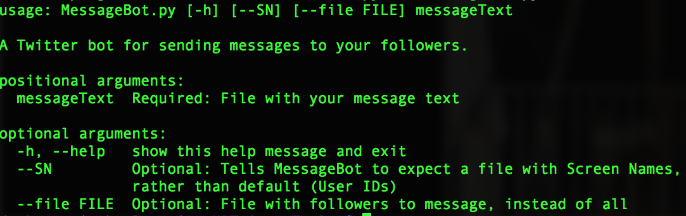

botsForABetterWorld Documentation¶
This project is an active work in progress! (as is this documentation)


Features¶
MessageBot¶
Sends Twitter Direct Messages to specified (or all) followers of an authenticated user
- Staggered API requests avoid being flagged as spam or hitting rate limit
- Twitter limits DM’s to 1000/day and 15/15 min. MessageBot will prevent you from exceeding your 15 min limit, and will simply pause and wait when you hit your daily limit. Note that messaging hundreds or thousands of followers will take hours to days. This isn’t a limitation of MessageBot, It’s a feature of Twitter that makes messaging bearable!
- DMs are meant for humans, so we try to make your messages less robotic. That’s why we stagger the calls by a randomized number of seconds, and generally slow them down. If you disable this feature, you will almost certainly be flagged as spam within seconds. (you have been warned)
- You choose a list of followers (specified 1 per line in a text file), or all of the followers for the authenticated user
- You can choose to use twitter handles/screen names instead of the unique numerical Twitter ID
Installation¶
(section under construction)
Dependencies:
- python2.7.x
- python-twitter library
You will need a Twitter “app” attached to your Twitter account, with which you can create API access keys
- This can be done at apps.twitter.com
- See this tutorial for more info

Support¶
Use -h at the command line for basic usage and option information:
License¶
Copyright 2017 Elizabeth Lagesse
This file is part of botsForABetterWorld.
botsForABetterWorld is free software: you can redistribute it and/or modify it under the terms of the GNU General Public License as published by the Free Software Foundation, either version 3 of the License, or (at your option) any later version.
botsForABetterWorld is distributed in the hope that it will be useful, but WITHOUT ANY WARRANTY; without even the implied warranty of MERCHANTABILITY or FITNESS FOR A PARTICULAR PURPOSE. See the GNU General Public License for more details.
You should have received a copy of the GNU General Public License along with botsForABetterWorld. If not, see http://www.gnu.org/licenses/.